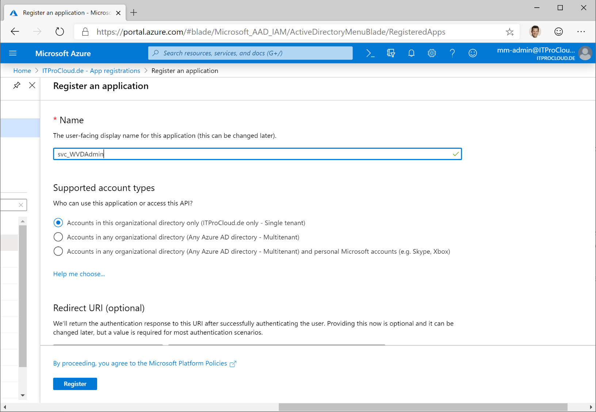
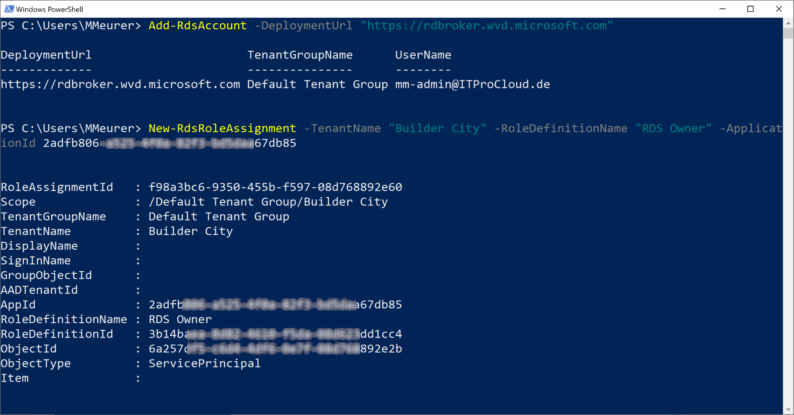

WVD Admin - A native administration Gui for Windows Virtual Desktop
Windows Virtual Desktop administration
Important for prior 1.2.1 users: Check this note
Windows Virtual Desktop is generally available and under continuous improvement. There was the time before Ignite 2019 where no administration GUI was publicly available. This changed with Ignite. The PG of Remote Desktop services releases an in-portal configuration for Windows Virtual Desktop which looks very nice and has a lot of configurable options. See https://twitter.com/RDS4U/status/1189773044094361601 for a preview or check it out in the Azure portal.
Sometimes it helps to have a native GUI to make some configuration. Therefore I build a tool to do this and last night I finished the project (in the current version) and provide it as a community tool for WVD.
The current version supports a lot of configuration and administration capabilities. You can:
- Add, edit and delete host pools
- Add, edit and delete application groups
- Add, edit and delete application and desktop (you can add a new app with the Windows file-open-dialog)
- Add a list of users to applications or a desktop (separated by ;)
- Send messages to a single user and users on a specific session host
- Logoff single users or all users of a specific session host
- Start and deallocate session hosts (the Azure VM behind)
- Delete session hosts and the VMs in Azure including disks and nics
- Create an image of a template VM without destroying the template
- Rollout a number of new session hosts based on a template image - including domain join and WVD installation and registration (comparable to Citrix MCS)
- Rollout VM Scale Sets
- Start and deallocate Scale Set instances
- Re-image Scale Set instances
- Add or remove Scale Set instances
- and some more things
Demo video
Installation
Download WVDAdmin.msi and install the application on your Windows client or on a template VM for your WVD.
Versions
1.5.3.00 Fix: Improvement updating the treeview
1.5.0.00 Add: Supporting the WVD Spring Release / Spring Update ; Some user operations from the session grid are now async; Fix: Spontaneous resize of the windows if data are reloaded
1.4.9.00 Add: Filter users, session hosts and host pools in the overview of sessions
1.4.8.00 Add: Support to add users by groups from Azure Active Directory, including an AAD browser (check my blog post and configure the service principal to use this feature)
1.4.6.00 Add: New VM sizes; all new scale sets are deployed as really scalable version (up to 600 instances each)
1.4.4.00 Fix: Service Principal Keys with some special characters are working now; Add: Faster loading of resources from WVD and Azure backend
1.4.2.00 Add: Support for NVv4 VM sizes (based on AMD Radeon Instinct MI25-GPU); support to set custom Azure tags for resources while deploying resources
1.4.0.00 Fix: From an older version, disks are deployed as standard-hdd even if premium-disk was selected; Change: Connection views are now located parallel to the logging list on the bottom (tenant-view); Add: Function to check for an updated version via https://blog.itprocloud.de/assets/files/WVDAdmin.xml
1.3.6.00 Add: New tag for session hosts: WVD.Path - used by Azure Monitor for WVD and Azure Autoscale for WVD - aka Project MySmartScale if an installed language pack conflicts with the Microsoft RDAgent (read this post to learn more)
1.3.5.00 Add: Allow an local admin to mirror a user session (WVDAdmin needs direct access to the session host via RDP)
1.3.4.00 Add: Networks are now listed as VNET/SUBNET in the rollout tab
1.3.3.00 Add: Support for a special mode if your WVD tenant and the session hosts in two different Azure Active Directory tenants
1.3.1.00 Fix: WVDAdmin crashed if 1.3.0 is your first version of WVDAdmin (HKEY_CURRENT_USER\Software\ITProCloud doesn’t exist while checking for multi-tenancy mode)
1.3.0.00 Add: AAD multi-tenancy mode (drop down list to handle different AADs) - https://blog.itprocloud.de/Windows-Virtual-Desktop-Windows-Virtual-Desktop-Administration-for-CSP-and-Consulting-Partners
1.2.8.00 Add: If you click a tenant a tenant wide list of sessions is listed. Logoff or send messages to multiple sessions
1.2.7.00 Add: The main window of the application is now resizeable
1.2.5.00 Add: Support for Scale Sets (with normal and ephemeral disks) -> see below
1.2.4.00 Add: Support for availability sets
1.2.3.00 Add: Support for automatic and static assigned host pools
1.2.1.00 Fix: Logging of rollout parameter by Azure custom extension is removed to avoid logging secrets
1.0.0.30 Fix: Rollout - OU can now be empty to join the default OU
1.0.0.29 Add: Supporting “special license mode” to save up to 50% on compute-cost (https://docs.microsoft.com/en-us/azure/virtual-desktop/apply-windows-license)
1.0.0.26 Add: Template VM can now be a VM with a standard disk (non-managed)
1.0.0.25 Fix: If you delete a VM the OS disk will deleted as well
1.0.0.23 Support for ephemeral disks
1.0.0.22 First published version - without auto-update of WVD Admin
Important for prior 1.2.1 users: I removed the logging of the Azure custom extension so that from version 1.2.1, no secrets are logged to “c:\WindowsAzure\Logs\Plugins\Microsoft.Compute.CustomScriptExtension\*”. I recommend to use the new version and to remove the logs from older session hosts (or to re-deploy these hosts). I found these logs while checking what other services are running on an Azure VM.
Support for VM Scale Sets
From version 1.2.5, I support working with VM Scale Sets. A Scale Set can have several instances, which are the VMs / session hosts. There are some essential things you have to know if you use VM Scale Set with WVDAdmin and WVD itself:
- Build a Scale Set with WVDAdmin. Select an image, right-click and select “Create session host from image”. Check “Rollout as VM Scale Set”
- You can use regular disks and ephemeral disks. If you use ephemeral disks, you cannot deallocate the instances of your Scale Set. You have to delete the instances
- Today you can not use ultra disks
- You can add and remove instances with WVDAdmin or in the Azure Portal. New instances will join the domain and WVD
- A new instance can only join WVD if the session host with the new name doesn’t exist. If you delete instances, the session host entry will also be removed
- You can re-image single instances or all instances of a Scale Set. After that, the instances are “clean” as at the first rollout
- Adding instances or re-imaging assumes that the Scale Set configuration (which is a custom script extension) has a valid WVD token to join new instances to WVD. While WVD provides only one token per host pool and that the token can be expiring, you can update the token with a right-click on the Scale Set and select “Update WVD token”. The max. lifetime of a token is 59 days
- Unfortunately, change the source image for a VM Scale Set. So if you want to update the image for a host pool, take these steps:
- Rollout a new Scale Set based on the new image
- Disable new logons for the old session host from the previous Scale Set
- Test the host pool based on the new Scale Set
- If no user logged on to the ancient Scale Set, remove all instances from the Scale Set (this deletes the session hosts in WVD as well)
- Remove the Scale Set
- Please feel free to give feedback
Support for ephemeral disks
You can now rollout your session hosts with ephemeral disks. Ephemeral disks are running on the Azure hypervisor and not stored in the fabric. This has some advantages:
- There are no storage costs (!)
- A very high data throughput because the disks exist on the hypervisor
- See @MichaWets blog post for more information: https://www.cloud-architect.be/2019/07/15/windows-virtual-desktop-running-on-ephemeral-os-disks/
Please note:
- You can not deallocate a VM with this disk type (because the disk cannot be stored) - you have to delete the VM (and to rollout a new one instead of starting a “normal” VM)
- Not each VM size can be used and there are limitations of the disk size (image size for rollout) based on the VM size: Example: Max ephemeral disk size for Standard_D4s_v3 is 64 GByte while a Standard_D8s_v3 can have up to 128 GByte. See https://docs.microsoft.com/en-us/azure/virtual-machines/linux/sizes-general
- If the Azure hypervisor fails your session host will fail as well and can not be re-deployed automatically

Configuration
Service principal (functional account)
To work with the GUI you need a service principal (function account) with the permission to administrate your WVD tenant or tenants. I decide to use a service principal at this time to avoid confusion if my Azure Ad user is only a guest account in the WVD tenant I have to administrate.
To create a service principal go to your Azure Ad -> App registration -> New registration and type a name for your principal like “ svc_WVDAdmin” and press “register”.

Click on “certificates & secrets”. Click “new client secret”, select a validity period and a description (like “Key01”). Press “add”.

Copy the generated key directly - it will never be displayed again. Note the key for later.
To use WVDAdmin with the AAD-Browser feature to select users and groups and to be prepared for the WVD Spring Update (expected in H1/2020) the service principal need two API permissions:
API Permissions: Add the permission “Azure Active Directory Graph” -> Application Permission -> Directory.Read.All

Add the permission “Microsoft Graph” -> Application Permission -> Directory.Read.All

To consent the permission and administrator of Azure AD have to grant this:
Go to “Overview”. Note the “Application (client) ID” and the “Directory (tenant) ID” as well.

You now have all data for your service principal:
- Tenant id
- Service principal id (application id)
- Service principal key
WDV permissions (pre-Spring release)
To use WVDAdmin you need at least an existing WVD tenant. If you new to WVD follow this article to create a WVD tenant: https://docs.microsoft.com/en-us/azure/virtual-desktop/tenant-setup-azure-active-directory
You have to use PowerShell to give the WVD the appropriated permission:
1
2
3
4
5
6
7
8
9
Import-Module -Name Microsoft.RDInfra.RDPowerShell
# log on with an administrative user account to your
Add-RdsAccount -DeploymentUrl "https://rdbroker.wvd.microsoft.com"
# list rds tenants
Get-RdsTenant
# give your service principal the right permission
New-RdsRoleAssignment -TenantName "Builder City" -RoleDefinitionName "RDS Owner" -ApplicationId 89050a12-xxxx-xxxx-xxxx-000000000000

Azure resource permissions
To image template VMs and to rollout new session hosts the service principal needs permission to the resource groups containing your session hosts (or are the target for these).
Open the Azure portal and go to the resource groups. Go into each resource group, click “Access control (IAM)” -> select “Add” -> Add role assignment. Select “contributor” (“owner” for resource groups you want to use for the Spring Release to allow adding users and groups) and search in “select” for your service principal name. Click the principal and save the settings.
Note:To use WVDAdmin with the WVD Spring Release(expected in H1/2020) the service principal needs the “Owner” Role to give users permissions to access the desktops and apps.

Do the same for the other resource groups. It’s a good way to have several resource groups:
- For each tenant or host pool
- For template VMs
- For the created images
The service principal must have permissions to your virtual network (vnet) to assign new VMs to the right subnet. Go to your vnet, click “Access control (IAM)” -> select “Add” -> Add role assignment. Select “contributor” and search in “select” for your service principal name. Click the principal and save the settings.
Prepare your “normal” Active Directory
Today each session host must be part of a “legacy” active directory domain (or have to use the domain services). To add new session hosts unattended we need two more things:
- An administrative user account with the permission to add a computer object to the active directory domain
- A file share with a configuration script and the WVD agent software
Create an administrative account to join computer objects to the domain
Open “Active Directory Users and Computers” and create a user object with a complex password and set a password to “never expire” (if you fine with this). I added the user srv_WVD-Join@itprocloud.de.
Open the menu “View” and select “Advanced Features”. Create or go to the OU where do you want to have your WVD session hosts in. Right-click the OU, select security and add your account with read/write/… permission.
Please note the OU canonical name. In my case: “OU=WVD,OU=Azure,OU=Site,OU=Servers,OU=Sys,OU=Organisation,DC=ITProCloud,DC=test”
Create a file share
Hint: Alternatively, you can use Azure blob storage to store the script. Make the blob storage read-only and use the URL as rollout script-path. E.g.: https://sharedservices01.blob.core.windows.net/wvd
Create a file share for the configuration script (which adds new session hosts to the domain and install the WVD agent). Give everyone at least read permissions. Set the NTFS permissions to everyone and read. This is necessary while during the first startup the VM extension tries to execute the script. In this process, the file share is accessed anonymously.

Place the following files in this share:
- ITPC-WVD-Image-Processing.ps1 (rename the download to .ps1)
- Microsoft.RDInfra.RDAgent.msi (rename the file)
- Microsoft.RDInfra.RDAgentBootLoader.msi (rename the file)
Make sure that you rename the files to fit the list above (without version numbers).
Important: If you are using Windows Server 2019 as file share make sure that anonymous file share access is enabled. Create a GPO for the session hosts containing the following configurations:
- Security Options:
- Accounts: Guest Account Status: Enabled
- Network access: Let Everyone permissions apply to anonymous users: Enabled
- Network access: Do not allow anonymous enumeration of SAM accounts and shares: Disabled
Configure WVDAdmin
Please start WVDAdmin. Before you load WVD and Azure data copy the Azure tenant id, service principal id and service principal key into the welcome tab. Press save and load the data by clicking “Reload all”.
You are now able to administrate WVD, create images from template VMs and rollout new session hosts.
The first time you want to rollout new session hosts you have to enter some information from your Active Directory and file share configuration from above:
Local Admin and local pw. are the local administrator account credentials which you can enter at this time.

Building an image
You can rollout VMs and VM Scale Set with images created by WVDAdmin. These images contain the logic to join the AD domain and WVD.
You can simple create an image from a template VM. The template VM must part of your AD like a normal client. You have not to sysprep or to normalize this template VM. Use the same template VM for Windows and application updates.
Following these steps to build your template:
- Install a VM in the Azure portal. Select the right OS (like Windows 10 Enterprise for Virtual Desktops)
- Make all Windows updates
- Join the VM to your AD
- Install your application
- Make your customizing (like installing language packages)
- Shutdown the template VM
To create the image open WVDAdmin and
- Navigate to the Azure template VM (Azure -> Virtual Machines -> RG -> VM)
- Right-click -> “Create a template image”
- Select the resource group to store the image
- Correct the script-path if necessary
- Press “Capture”
You can and should reuse the template VM for new updates and applications. After these changes shut down the template VM and create a new image .
Troubleshooting
The image is not created. An error message occurs:
- Check if your template VM part of the AD
- If your file server Windows Server 2019, read above
- Check if you have set the NTFS and share permission correctly
- Azure portal: Go to the temp VM (next to the template VM) and check the state of the extension installation. There should be an error message like script not found; access denied, etc.
- Have you renamed the RD agent and bootloader?
- Is the script saved correctly: ITPC-WVD-Image-Processing.ps1 not ITPC-WVD-Image-Processing.ps1.txt
- Don’t forget to delete the temp VM and temp disk to avoid costs
- Make sure that your template VM uses managed disk
- An endless loop of “Waiting for the temporary vm (power off)” which results in an error after 30 minutes: Something goes wrong with sysprep. You can check the sysprep log in %WinDir%\system32\Sysprep\Panther on the temporary VM.
This is often caused by Sysprep and installed language packs.
Workaround: Delete all user profiles except the logged in user and default users: Press Win+R, type “SystemPropertiesAdvanced”, Advanced -> Settings - The script generates additional log files in %WinDir%\System32\LogFiles
- NEW: An endless loop of “Waiting for the temporary vm (power off)” : Update to the newest PowerShell script for generalizing: ITPC-WVD-Image-Processing.ps1
Feel free to use it and download the 64-bit Windows application “WVD Admin” from here: WVDAdmin.msi